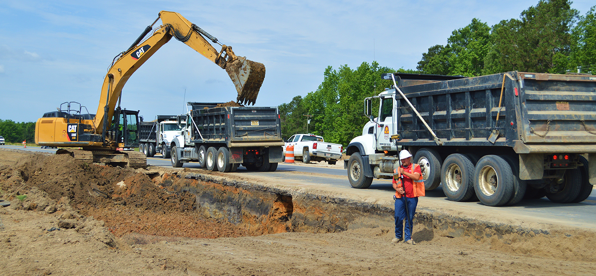
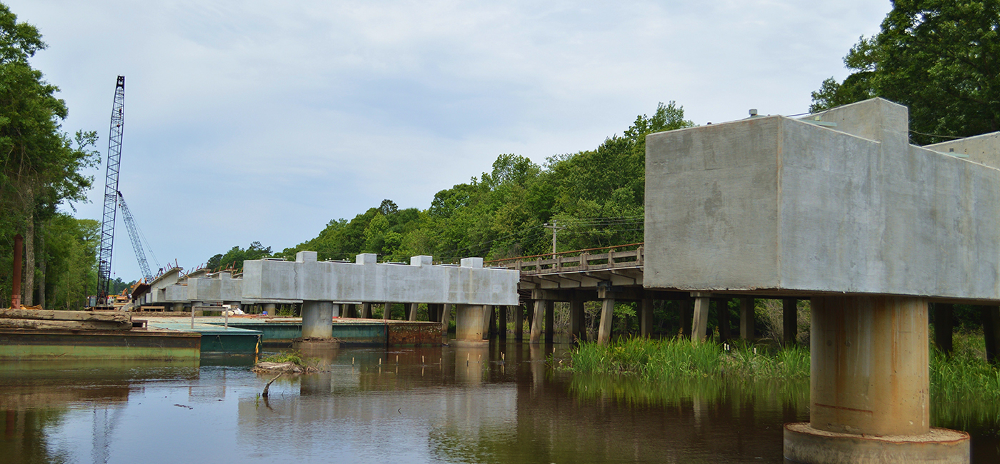
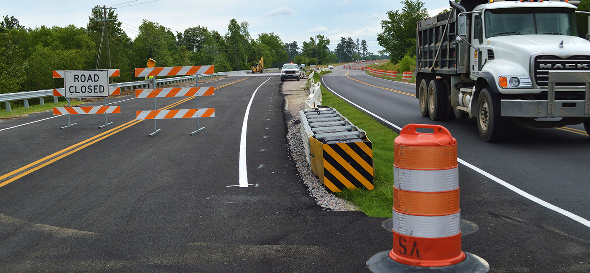

Southern Asphalt Highway Projects
Southern Asphalt has successfully constructed over $1 billion in diverse heavy highway/heavy civil construction projects. Southern Asphalt provides both general contracting and alternative project delivery methods including Design/Build and Construction Management specializing in the construction of different types of bridges, structural concrete, highways and the paving of streets, highways and airport runways. Almost three decades of successful project management and construction has given rise to Southern Asphalt's large scale expansion, which now includes nearly every major aspect of highway work, asphaltic concrete and rubberized Southern Asphalt.

Self-performing a wide range of construction activities, Southern Asphalt is equipped to excel in multiple areas of specialization that include:
· Construction, renovation and resurfacing streets, highways and airport runways · Structural concrete including all types of bridge structures · Asphaltic concrete and rubberized asphaltic concrete production · Underground Piping; including water, sewer and storm drain
Big Projects Done Right
Southern Asphalt project team takes great pride in their reputation among owners for completing large scale complex projects safely, on time and under budget. A significant portion of our annual revenue is with public entities, such as state Department's of Transportation, Counties, Cities, the Army Corp of Engineers and the Federal Government. We employ a large team seasoned and highly experienced management, skill and craft professionals with wide-ranging experience in all phases of heavy highway and heavy civil construction. Our fleet of up to date equipment and our mobile asphalt production plant can be quickly mobilized to job sites throughout the southwest.
Southern Asphalt strives to create an atmosphere of safety, teamwork and collaboration on all of the projects we build. We have developed numerous long standing profitable relationships in both the Public and Private Development arenas by developing a well deserved reputation for delivering our projects safely, on-time and on budget.

Warnings include:
· Advance Warning Signs · Message Boards · Crash Trucks · Escort Vehicles · Flagmen · Lights & Cones
Safety is our No. 1 goal.
Safety is an integral part of the culture at Southern Asphalt. We have regular team meetings to discuss procedures to make sure all our crewmembers are conscious of themselves, their colleagues and the traveling public. We also screen all of our subcontractors to make sure we are able to maintain our excellent record of safety.
Crew Safety - Our dedicated safety director keeps a close eye on our operations. In addition to pre- construction safety meetings, we encourage near-miss reporting and thoroughly investigate any incidence to prevent future accidents. In addition, our field staff participates in annual OSHA classes to ensure they have the training they need to do the job.
Work-zone Safety - We make every effort to protect the public while we perform our work. Whether we're widening a road at night or simply closing a lane in the afternoon, our philosophy is that a work-zone should be well marked, simple to navigate and easy for all drivers to pass through safely and with minimal disruption. Our Traffic Control Division stays in good contact with job superintendents and subcontractors to schedule lane closures and ensure warning signs are in place.